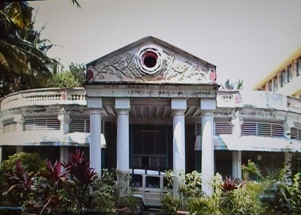
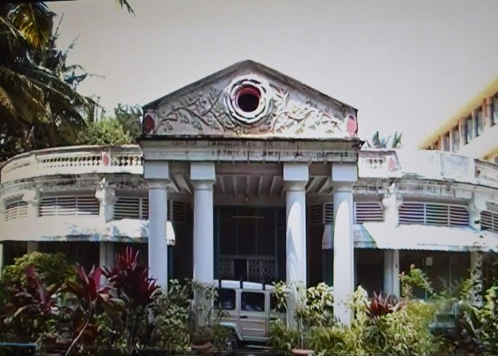

The Congregation of the Sisters of St. Anne, Bangalore, founded in Bangalore in the year 1857 is a Religious Institute of Pontifical Right and dedicated to apostolic works in India and Abroad. It is the first Women Religious Congregation Founded in Karnataka.Bishop Stephen Louis Charbonnaux, the first Bishop of Mysore Mission being convinced of the paramount importance of Catholic Education, brought the Good Shepherd Sisters of Angers (RGS) from France to take charge of the Christian Schools and Orphanages in Bangalore. These foreign sisters found it too much to cater to the needs of the local Kannada and Tamil speaking children since they did not have command over the local languages. So, being a visionary leader, the Bishop thought of Founding an Indian Congregation to cater to the Educational and Evangelization needs of the Indian Neo-catechumens. Thus, the Congregation of the Sisters of St. Anne took its birth in 1857 in the premises of the Good Shepherd Convent in Bangalore.
The Congregation of the Sisters of St.Anne, Bangalore, takes pride in tracing its origin to a venerable and veteran Missionary, late Rt. Rev. Msgr. Stephen Louis Charbonnaux of the first Vicar Apostolic (1850 – 1873) of then Mysore Mission, with his residence in Bangalore. Being convinced of the paramount importance of Catholic education not only for boys but also for girls, this zealous prelate invited in 1854, the Good Shepherd Sisters of Angers from France to come and take charge of Christian schools and orphanages in Bangalore. But these foreign sisters found it too much to care to the needs of the local Kannada and Tamil speaking children. So Msgr. Charbonnaux thought of a Congregation of Indian sisters. “In the course of the year 1857 Msgr. Charbonnaux put one of his long cherished plans into execution by opening a religious community for Indians of all castes, placing it, like a loyal Breton, under the patronage of St.Anne. He had the satisfaction of perpetuating the devotion to St.Anne which he had imbibed in his own native land” (cfr.Annals). Thus the Congregation of the Sisters of St.Anne, Bangalore, took its birth in 1857 in the premises of the Good Shepherd Convent, Bangalore.
This newly established Congregation, though at first destined to be only an auxiliary to the Good Shepherd Sisters, took to teaching and catechizing Indian children in schools and orphanages as their main apostolate. They were engaged in this apostolate not only in convent schools but also in parish schools. The first school entrusted to them was in St.Mary’s Parish, Blackpally, and started with fifteen pupils. Care of the sick was also one of their aims. The need of such a Congregation was so great that it was compelled to open branches in Mysore in the year 1864, in Bellary in 1868 and later on in Rangoon in the year 1924. When St.Marthas Hospital was opened in 1886 and when St.Michael’s Convent was started in 1922 our sisters were among those who took care of those hospitalized and those orphaned. We had a separate house in the year 1880 and a much larger one in the year 1908 within the Good Shepherd compound.
Our rules were first framed by Fr.Jarrige. They were revised and colour of the habit was changed from white to blue in the year 1882. In 1884 there was a great demand for the services of our sisters in the local parish schools. Our sisters started teaching at Sacred Heart Parish School, Bangalore, in 1893. Our Noviciate was declared canonically erected in the year 1920 (See Annals). The Rules of St.Augustine were made part of our Constitutions and were approved by Bishop H.Tessier on 1st July 1921. Our sisters were allowed to make only “indefinite annual vows” till 1944. It was only from 26th July 1945 that they were permitted to take perpetual Vows as per the Decree dated 18th July 1944.
Right from its inception, till the year 1957 our Congregation was more known as “Indian” rather than “St.Anne’s”. It was directed by the Good Shepherd Sisters of Angers, France. We owe them a debt of gratitude for all the services they rendered to our Congregation for a full century.
The process of the memorable departure of our Congregation from the Good Shepherd Convent started in the year 1957. Our reformer was the late Archbishop Thomas Pothacamury, a man of clear vision and indomitable courage. Right from the beginning of his episcopate in Bangalore, he worked hard for the reformation of our sisters. he corresponded with France as well as with Rome and saw to it that this “Indian” Congregation was canonically erected into an autonomous Congregation on 21st November 1959. It was he who purchased for us our present centre in Miller Road. The sacred Congregation for the evangelization of peoples in its letter, Prot.N.68/59, dated April 14th 1959 confirmed that His Grace the Archbishop had all the necessary faculties to govern it until such time as our Congregation was properly established. His Grace appointed late Mother Divine Heart, one of Good Shepherd Sisters, as his delegate to direct us. She was with us till 1970. His Eminence D. Simon Cardinal Lourdusamy, the immediate successor of Rt. Rev. Dr.Thomas Pothacamury as the Archbishop of Bangalore took keen interest in the growth of this old but young Congregation.
It was only in the year 1971 that one of our own, Mother Presentation, was elected as our first Superior General. She was re-elected in the year 1977. Thanks to her pious and pioneering personality and the whole hearted co-operation of her able assistant the late Mother Barbara (R.I.P.1980), this Congregation made rapid progress. Mother Margaret Mary, was elected in 1983 as our second Superior General, and was re-elected for another term in 1989. Under her able guidance our Congregation has grown further and we could establish many communities in various parts of India. In 1995 Mother Angela Mercy, the third Superior General was elected and she led the Congregation to the new millennium with complete trust and confidence in the providence of God. The fourth Superior General, Sr.Isabel during her term from 2001 – 2007 led the Congregation to greater growth. The present Superior General, Srt.Shanthi is guiding the Congregation with a new vision and enthusiasm to be the sign of the glory to come.
The Congregation that had just a half a dozen houses with 91 Sisters when it left the Good Shepherd Convent has now 620 professed sisters and 82 houses are spread out 23 diocese in India besides – in USA, Germany and Tanzania. The General Chapter in 1995 decided to divide the Congregation into provinces and Regions for more effective administration and to foster its further development, and to reach out to the needy people with our loving and committed service. Accordingly Our Lady of Mercy Province with its Provincilate in Bangalore, and Sacred Heart Province with its Provincilate at Guntupally in Andrapradesh were erected. Simultaneously St.Thomas Region with its Regional House at Thannipuzha in Kerala also came into existence. In 2004 St.Thomas Region was raised into the status of a Province and in 2007 a new Region, comprising all the houses in Tamil Nadu was erected.
With a decree of the Congregation for Institutes of Consecrated Life and Socities of Apostolic Life (Prot.No.236 – 1 / 90 ) dated 1st November 1992, our Congregation has been raised to the status of a Religious Institute of Pontifical Right. The General Chapter celebrated in April 1995 has decided to divide our Congregation into provinces for a more effective administration and to foster its further development, in order to reach out to more people with our loving and committed service to the poor.

 

The Founder of the Congregation of the sisters of St. Anne Bangalore (SAB)is Bishop Stephen Louis Charbonnaux, of the Paris Foreign Missions (MEP), the first Apostolic Vicar (1850-1873) of the then Mysore Mission. BishopCharbonnaux MEP born in France came as a missionary to India in 1831. He toiled for the cause of evangelization and education in his newly formed Diocese. He had mastered local languages, published number of Books including the Latin-Kannada Dictionary which has remained as a unique contribution to Kannada Literature. He was a zealous, courageous, kind, compassionate and humble missionary.
Above all he was a man of prayer with special devotion to the Lord in the Holy Eucharist. After all the busy schedule and strains of the day, he always found time to be in the presence of the Eucharistic Lord to pour out his heart’s anxieties and dreams to his Master who called him as a Missionary to India. He constructed Churches, Seminary to train the local clergy, Schools and Orphanages to educate the young besides being very busy with direct evangelization efforts. One of his best contributions to the Catholic Church is Founding a Religious Congregation for the Sisters under the patronage of St. Anne the Mother of Mary, the Mother of the Universe. Through this Congregation thousands have come to know Christ and have embraced Christianity as their religion in the distant lands of the Country. The steadfastness of faith that they had shown in times of Christian persecution has begotten many martyrs to the Church and their love for Christ is an inspiration for all of us. May his Missionary spirit permeate in our life and ministry to bring many more to the Christian fold.
Emblem: The hands holding up the world in the emblem above remind us of our mission to offer the entire human race to the Triune God through our loving and dedicated service. The Cross stands for love, suffering and sacrifice. The burning lamp is the symbol of the Risen Lord. It inspires us to be the light of the world and the salt of the earth by our Christo-centric life.
Motto: “Love and Service”, Committed to love and service of God and humanity is the purpose of our being together.
Charism :“Evangelization through loving service”.